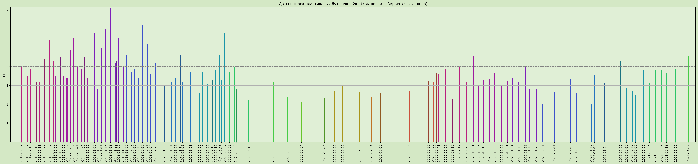
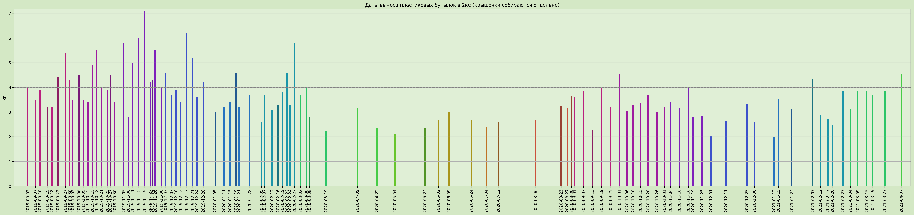

Сырые данные • Скрипт для обработки и построения графиков
Примечание: после 8 марта 2020 большинство студентов разъехались из общежитий по домам в связи с самоизоляцией из-за COVID-19. Статистику до начала самоизоляции можно посмотреть здесь.
 
